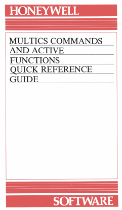
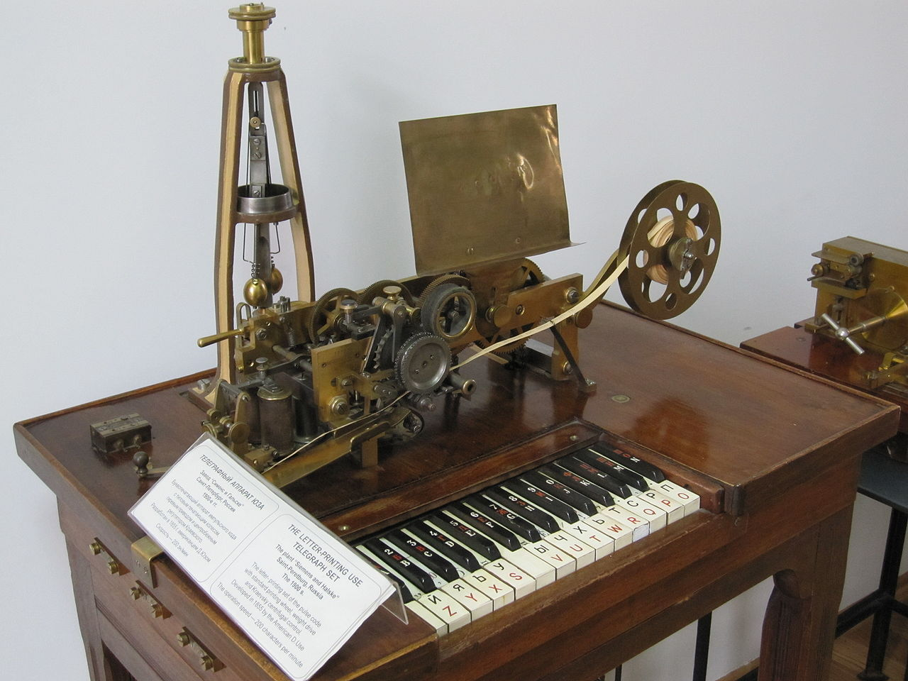
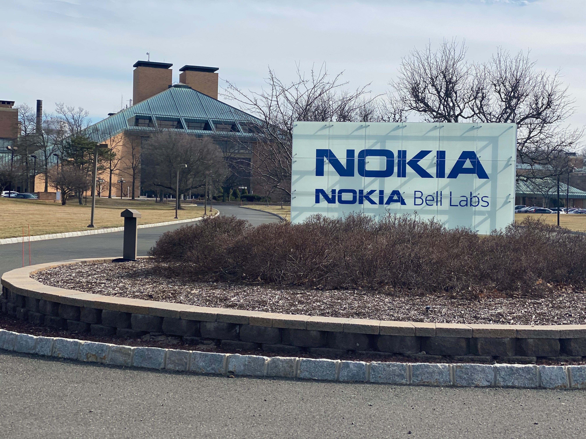
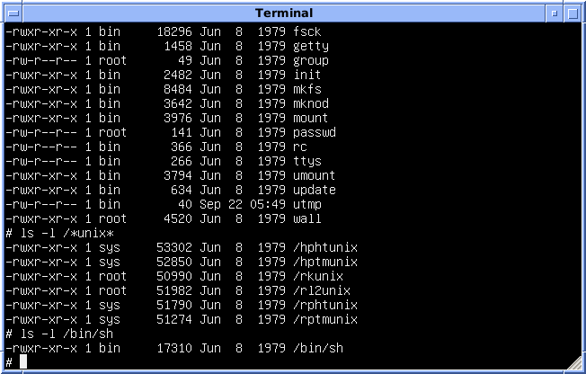
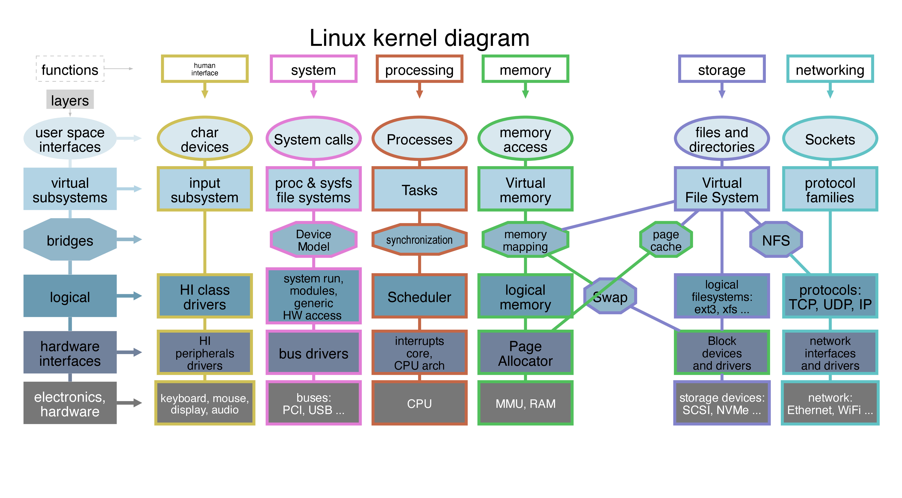

The history of computer OSOperating SystemOperating System starts in the 1950s, with simple schemes for running batch programs efficiently, minimizing idle time between programs. A batch program is one that does not interact with the user at all. It reads all its input from a file, possibly a stack of punch cards shown in Fig. 4.1, and outputs all its output to another file, possibly to a printer.
Then, in early 1960s, interactive use started to gain ground. Not only interactive use, but having several people use the same computer at the same time, from different terminals which were called time-sharing systems and were quite a challenge to implement compared to the batch systems.
During the 1960s there were many attempts at building good time-sharing systems. Some of these were
university research projects, others were commercial ones. One such project was Multics, [96] ¶ 
From a marketing and political point of view, after the 1.0 release the next huge step happened in 1997, when Netscape decided to release their web browser as free software. [97] the term “open source” was created for this This was the occasion that first brought free software to the attention of the whole computing world for the time. It has taken years of work since then, but free software [98] or open source. has become not only generally accepted but also often the preferred choice for many applications.
Apart from being a technological feat, Linux is also an interesting social phenomenon. Much through Linux, the free software movement has broken through to general attention. On the way, it even got an informal marketing department and brand:
It is baffling to many outsiders that something as successful as Linux could be developed by a bunch of unorganized people in their free time. The major factor here is the availability of all the source code to the system, plus a copyright license which allows modifications to be made and distributed. When the system has many programmers among its users, if they find a problem, they can fairly easily fix it. Additionally, if they think a feature is missing, they can add it themselves. For some reason, that is something programmers like to do, even if they’re not paid for it: they have an itch (a need), so they scratch (write the code to fill the need). It is necessary to have at least one committed developer who puts in lots of effort. After a while, however, once there are enough programmer-users sending small changes and improvements, you get a snowball effect: lots of small changes result in a fairly rapid total development speed, which then attracts more users, some of which will be programmers. This then results in more small changes and improvements sent in by users, and so on. For operating system development specifically, this large group of programmer-users results in two important types of improvements: bug fixes and device drivers. Operating system code often has bugs that only occur rarely and it can be difficult for the developers to reproduce them. When there are thousands or more users who are also programmers, this results in a very effective testing and debugging army. Most of the code volume in Linux is device drivers. The core functionality, which implements multitasking and multiuser functionality, is small in comparison. Most device drivers are independent from each other, and only interact with the operating system core via well defined interfaces. Thus, it is fairly easy to write a new device driver without having to understand the whole complexity of the operating system. This also allows the main developers to concentrate on the core functiionality, and they can let those people write the device drivers who actually have the devices. It would be awkward just to store the thousands of different sound cards, Ethernet cards, IDE controllers, motherboards, digital cameras, printers, and so on that Linux supports.
The Linux development model is distributed, and spreads the work around quite effectively.
The Linux model is not without problems. When a new device gets on the market, it can take a few months before a Linux programmer is interested enough to write a device driver. Also, some device manufacturers, for whatever reason, do not want to release programming information for their devices, which can prevent a Linux device driver to be written at all. Luckily, with the growing global interest in Linux such companies become fewer in numbers.


The CLICommand-Line InterfaceA software mechanism you use to interact with your operating system using your keyboard came from a form of dialogue by humans over teleprinter (TTY) machines, in which human operators remotely exchanged information instead of a human communicating with another human over a teleprinter. Early computer systems often used teleprinter machines as the means of interaction with a human operator.
The computer became one end of the human-to-human teleprinter model.
The mechanical teleprinter was then replaced by a terminal, a keyboard and screen emulating the teleprinter. Smart terminals permitted additional functions, such as cursor movement over the entire screen, or local editing of data on the terminal for transmission to the computer.


As the microcomputer revolution replaced the traditional systems, hardware terminals were replaced by terminal emulators - PCPrincipal ComponentPrincipal Component software that interpreted terminal signals sent through the PCPrincipal ComponentPrincipal Component’s serial ports. These were typically used to interface an organisation’s new PCPrincipal ComponentPrincipal Component’s with their existing mini- or mainframe computers, or to connect PCPrincipal ComponentPrincipal Component to PCPrincipal ComponentPrincipal Component. Some of these PCPrincipal ComponentPrincipal Components were running Bulletin Board System software. Early operating system CLICommand-Line InterfaceA software mechanism you use to interact with your operating system using your keyboards were implemented as part of resident monitor programs, and could not easily be replaced. The first implementation of the shell as a replaceable component was part of the Multics time-sharing operating system. In 1964, MIT Computation Center staff member Louis Pouzin developed the RUNCOM tool for executing command scripts while allowing argument substitution. Pouzin coined the term “shell” to describe the technique of using commands like a programming language, and wrote a paper about how to implement the idea in the Multics operating system. Pouzin returned to his native France in 1965, and the first Multics shell was developed by Glenda Schroeder. At Nokia Bell Labs headquarters the first Unix shell, the V6 shell, was developed by Ken Thompson in 1971 and was modelled after Schroeder’s Multics shell. The Bourne shell was introduced in 1977 as a replacement for the V6 shell. Although it is used as an interactive command interpreter, it was also intended as a scripting language and contains most of the features that are commonly considered to produce structured programs.


The Bourne shell led to the development of the KornShell (ksh ), Almquist shell (ash ), and the popular
Bourne-again shell (or bash ). Early microcomputers themselves were based on a CLICommand-Line
InterfaceA software mechanism you use to interact with your operating system using your keyboard
such as CP/M, DOS or AppleSoft BASIC. During the 1980s and 1990s, the introduction of the
Apple Macintosh and of Microsoft Windows on PCs saw the command line interface as
the primary user interface replaced by the Graphical User Interface. The command line
remained available as an alternative user interface, often used by system administrators
and other advanced users for system administration, computer programming and batch
processing.
Shells in other Operating Systems
- Windows
-
In November 2006, Microsoft released version 1.0 of Windows PowerShell, which combined features of traditional Unix shells with their proprietary object-oriented .NET Framework. MinGW and Cygwin are open-source packages for Windows that offer a Unix-like CLI. Microsoft provides MKS Inc.’s ksh implementation MKS Korn shell for Windows through their Services for UNIX add-on.
- Macintosh
-
Since 2001, the Macintosh operating system macOS has been based on a Unix-like operating system called Darwin. On these computers, users can access a Unix-like CLICommand-Line InterfaceA software mechanism you use to interact with your operating system using your keyboard by running the terminal emulator program called Terminal, or by remotely logging into the machine using ssh. Z shell is the default shell for macOS, [99] This was implemented as of macOS Catalina. with
bash,tcsh, and the KornShell also provided.Before macOS Catalina, bash was the default shell.

Linux is a general purpose computer operating system, originally released in 1991 by Linus Torvalds and began as a personal project of him [†-2] , "A study of the Linux kernel evolution", ACM SIGOPS Operating Systems Review, booktitle, (2006).. It was to create a new free operating system kernel which the resulting kernel has been marked by constant growth throughout its history. [100] ¶[100]The MINIX logo. There were alternative OSs on the market such as MINIX but it was under a proprietary license which was later became open-source in 2000. This was one of the reasons why Linux was attempted in the first place. To create a truly open-source implementation of UNIX.
Linux is defined by its kernel, called the Linux kernel, which is the core component of the system. This kernel interacts with the computer hardware to allow software and other hardware to exchange information, which you can see in Fig. 4.5.
Imagine the kernel as the middle-man between your software and the hardware. This allows you to write a program without worrying to much about what the hardware is.
As Linux is an open-source project and is probably one of the greatest collaborative software work in history, it has a rich history. It was inspired by MINIX which, in turn, was inspired by UNIX with UNIX being the first portable operating system ever designed [†-3] , "The Design of the UNIX", RTM. Operating system Prentice Hall, booktitle, (1986). as it was mostly written with the C programming language [†-4] , "UNIX time-sharing system: Portability of C programs and the UNIX system", The Bell System Technical Journal, booktitle, (1978)..
Open Source v. Closed Source
In programming there are two (2) main approaches when it comes to sharing code:
-
It can be closed source, which means, you are not allowed to edit the code the program is running on,
-
Open source which you are free to edit and share the code as you see fit.
Linux is based on a philosophy of software and operating systems being free.
The software license which allows this, in the case of the Linux kernel, is called the GNU General Public License. [101] are a series of widely used free software licenses, or copyleft licenses, that guarantee end users the freedoms to run, study, share, or modify the software. This emphasis of freedom, both, of cost and modification has helped Linux to become popular for many different applications and purposes from tinkering programming to being used in massive databases of major companies.
Linux has popped up everywhere from the majority of the servers that run web services we all use, to super computers, to Wi-Fi routers, in cars, mobile phones, and everywhere in between. Odds are that you are closed to a device that uses some part of the Linux kernel. In the midst of all these different kinds of Linux installations, the most important distinction you’ll need to be aware of is one of the genealogy of Linux.
While the Linux kernel is more or less the same across nearly all installations of Linux, the software that surrounds the kernel that provides capabilities like software package management, control of services, and the location of configuration files differs between them. Many of the tools that come packaged with Linux come from the GNU Project and aren’t actually a part of Linux and, taken together, the combination of the kernel and these common tools is often referred to as GNU Linux. Different groups of software and configuration choices that are maintained by individuals or groups of people are called distributions, or distro’s. Most major distributions of Linux fall into categories based on the original distribution from which they were derived. These are: [102] The entire family history of linux can be viewed in the Distribution Timeline

| Distribution | Advantages | Disadvantages | |||||||
| Linux Mint | Superb collection of custom tools developed in-house, hundreds of user-friendly enhancements, inclusion of multimedia codecs, open to users’ suggestions | The project does not issue security advisories | |||||||
| Ubuntu | Fixed release cycle and support period; long-term support (LTS) variants with five years of security updates; novice-friendly; wealth of documentation, both official and user-contributed | Lacks compatibility with Debian; frequent major changes tend to drive some users away; non-LTS releases come with only nine months of security support | |||||||
| Arch Linux | Excellent software management infrastructure; unparalleled customisation and tweaking options; superb on-line documentation | Occasional instability and risk of breakdown | |||||||
| Gentoo | Highly flexible, endlessly customizable, able to use a range of compile-time configurations, init systems and run on many architectures | Requires a higher degree of knowledge to use, upgrading packages via source can be time consuming | |||||||
| Slackware Linux | Considered highly stable, clean and largely bug-free, strong adherence to UNIX principles | Limited number of officially supported applications; conservative in terms of base package selection; complex upgrade procedure | |||||||
| Debian | Very stable; remarkable quality control; includes over 30,000 software packages; supports more processor architectures than any other Linux distribution | Conservative - due to its support for many processor architectures, newer technologies are not always included; slow release cycle (one stable release every 2 - 3 years); discussions on developer mailing lists and blogs can be uncultured at times | |||||||
| Fedora | Highly innovative; outstanding security features; large number of supported packages; strict adherence to the free software philosophy; availability of live spins featuring many popular desktop environments | Fedora’s priorities tend to lean towards enterprise features, rather than desktop usability; some bleeding edge features, such as switching early to KDE 4 and GNOME 3, occasionally alienate some desktop users | |||||||
| openSUSE | Comprehensive and intuitive configuration tool; large repository of software packages, excellent web site infrastructure and printed documentation, Btrfs with boot environments by default | Its resource-heavy desktop setup and graphical utilities are sometimes seen as “bloated and slow” | |||||||
| Red Hat | Long-term, commercial support of ten years or more. Stability. | Lacks latest Linux technologies; small software repositories; licensing restrictions | |||||||
| FreeBSD | Fast and stable; availability of over 24,000 software applications (or "ports") for installation; very good documentation; native ZFS support and boot environments | Tends to lag behind Linux in terms of support for new and exotic hardware, limited availability of commercial applications; lacks graphical configuration tools | |||||||
Depending the readers future work or study area, it is likely to end up learning to use the command line on a system that inherits from one of these distributions. Most likely, it will be a distribution derived from Debian or Red Hat. Linux Mint, Ubuntu, Elementary OS, and Kali Linux are all derived from Debian. CentOS, Fedora, and Red Hat Enterprise Linux are derived from Red Hat.
The history of all of these different distributions of Linux is beyond the scope of this document. But, what this means at its core is the need to be aware of what system is in use and the need to adapt to account for differences in distributions. As we begin working with Linux, through the command line, it will be apparent, most of what can be done is the same across the major distributions.
-
¶
- PCPrincipal Component
Principal Component
-
¶
- CLICommand-Line Interface
A software mechanism you use to interact with your operating system using your keyboard
-
¶
- OSOperating System
Operating System
- 1.
- , "Hughes Letter-Printing Telegraph Set built by Siemens and Halske in Saint Petersburg, Russia, ca.1900", journaltitle, booktitle, (2009).
- 2.
- , "A study of the Linux kernel evolution", ACM SIGOPS Operating Systems Review, booktitle, (2006).
- 3.
- , "The Design of the UNIX", RTM. Operating system Prentice Hall, booktitle, (1986).
- 4.
- , "UNIX time-sharing system: Portability of C programs and the UNIX system", The Bell System Technical Journal, booktitle, (1978).
- [97].
- the term “open source” was created for this
- [98].
- or open source.
- [99].
- This was implemented as of macOS Catalina.
- [101].
- are a series of widely used free software licenses, or copyleft licenses, that guarantee end users the freedoms to run, study, share, or modify the software.
- [102].
- The entire family history of linux can be viewed in the Distribution Timeline